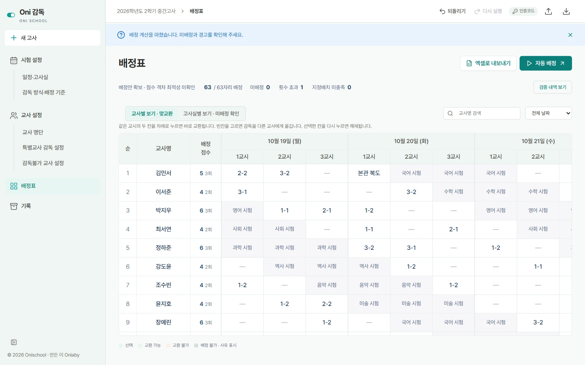

Oni Class
BetaA homeroom teacher’s workspace for calendars, timetables, student rosters, attendance and submissions. Built around the Windows desktop, with selected records available on mobile.
Windows desktop · Korean interface
Tools for teachers · Made in Korea
Oni School is a family of desktop tools for Korean school teachers. Each app takes on one part of school work, and each has its own page with a tour of the interface, its data handling and its release status.
Two apps in beta · One in development · Two planned
The apps
Open an app’s tour to see its screens, workflow and data handling. Each app is a separate download with its own release status.
A homeroom teacher’s workspace for calendars, timetables, student rosters, attendance and submissions. Built around the Windows desktop, with selected records available on mobile.
Windows desktop · Korean interface

Draft student records from observation notes and keyword chips, check the wording against the writing guidelines, and apply teacher-approved text to NEIS.
Windows desktop · Korean interface

Assigns exam proctors across rooms and periods from the schedule and each teacher’s conditions, keeps the load even, and exports the roster to Excel. Not yet released.
Windows desktop · Korean interface
The next Oni tool, for school timetable work. Features and supported platforms will be announced during development.
A planned tool for elective course registration and seat management.
The platform
A color-coded switch icon for each app, and the same calm layout, type and controls inside.
Korean interfaces that follow real school routines, including the steps that end in NEIS, the national school information system.
Storage differs from app to app, so each tour says what stays on the PC and what leaves it.
About Oni School
Oni School is an education software project developed and operated by Oniaby, a Korean teacher building tools to reduce repetitive school administration.
We distinguish available features from work that is still in development.
We welcome messages in Korean or English.